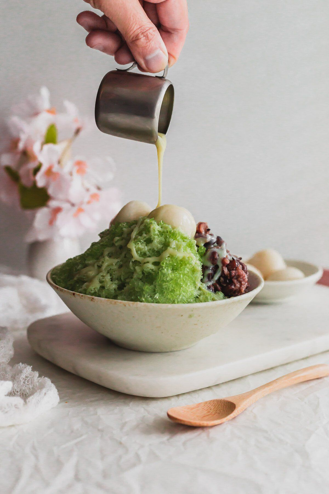

BINGSU DE MATCHA
COREIA - SOBREMESA

Bingsu de matcha sobremesa coreana
Bingsu de matcha é uma sobremesa coreana feita com raspas de gelo saborizadas com chá verde matcha, acompanhadas de feijão vermelho, mochi mastigável e adoçado com leite condensado. Bingsu é uma sobremesa de gelo raspado coreana. A versão mais comum é patbingsu, que é um gelo raspado com pasta de feijão vermelho doce. Existem muitas variações de sobremesas de gelo raspado na Ásia, incluindo kakigori (japonês), ais kacang (malaio) e halo-halo (filipino). O que diferencia o bingsu, por exemplo, de uma granita, é que o gelo raspado é super leve e arejado, com grandes flocos fofos de cristais de gelo.
INGREDIENTES
- Água quente: fervida e resfriada a 80°C
- Matcha: use um pó de matcha de alta qualidade para obter o melhor sabor e sabor; ajuste a quantidade de acordo com sua preferência
MODO DE PREPARO
- Faça o bloco de gelo matcha: Adicione o pó de matcha a um copo / jarra / tigela. Despeje a água fervida sobre o matcha. Bata o matcha até espumar. Deixe esfriar.
- Transfira o matcha resfriado para um recipiente seguro para freezer ou moldes de gelo (usei os moldes que vieram com o raspador de gelo) e congele até ficar sólido.
- Raspe o gelo: Remova o bloco de gelo matcha congelado e deixe-o em temperatura ambiente por cerca de 10 minutos. Coloque o bloco de gelo matcha no raspador de gelo. Raspe o gelo matcha em uma tigela resfriada de acordo com as instruções do fabricante do raspador de gelo.
- Sirva imediatamente com suas coberturas preferidas e leite condensado.
DICAS
- Escolha um matcha de alta qualidade para obter o melhor sabor. Procure por matcha que tenha uma cor verde brilhante, com um aroma agradável de grama. Não deve ter gosto amargo ou desagradável.
- Se você não tiver um raspador de gelo mecânico, pode usar um liquidificador ou processador de alimentos potente para quebrar o gelo, mas a textura não será tão fofa; será mais parecido com uma granita.